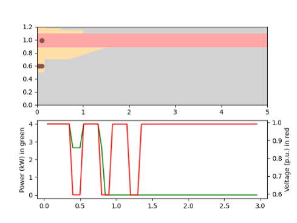
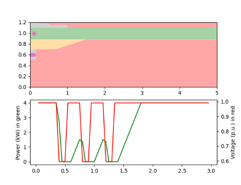

PV System Voltage Ride-Through#
Controller overview#
This controller implements the voltage ride-through requirements from both IEEE 1547-2003 and the IEEE 1547-2018 standard.
The controller implements ride-through requirements in complete detail. This includes
Implementation of inverter behaviour in defined regions such as may trip, current limited, permissive etc.
Implementation of inverter categories for the IEEE 1547-2018 standard.
System behavior under multiple disturbances.
System recovery under momentary cessation and trip scenarios.
{kind=link}
The figure above shows inverter response to a fault. The inverter is configured to provide ‘momentary cessation’ operation in the ‘may trip’ region. The inverter enter momentary cessation region (grey) and the PV is temporarily disconnected. Once the fault is cleared, the PV system goes back to full power in 0.4s in a ramped manner as per the per IEEE 1547-2018 standard
{kind=link}
The figure above shows inverter response to multiple faults fault. The inverter is modeled to trip on multiple faults. As per the standard the inverter should trip on the second consecutive fault. After the first fault, PV system enter momentary cessation region and starts to recover. On the second fault, the PV system trips and is required to wait at least 300s before it can reconnect
{kind=link}
The figure above shows inverter response to multiple faults fault. The inverter is modeled to NOT trip on multiple faults. With each fault, PV system enter momentary cessation region and starts to recover in a ramped manner. It finally recovers after the third fault
Controller model#
- pydantic model PyDSS.pyControllers.models.PvVoltageRideThruModel[source]#
Data model for the PV voltage ride through controller
Show JSON schema
{ "title": "PvVoltageRideThruModel", "description": "Data model for the PV voltage ride through controller", "type": "object", "properties": { "kva": { "default": 4.0, "description": "kVA capacity of the inverter (AC-side).", "minimum": 0.0, "title": "Kva", "type": "number" }, "max_kw": { "default": 4.0, "description": "kW capacity of the PV system (DC-side).", "minimum": 0.0, "title": "Max Kw", "type": "number" }, "voltage_calc_mode": { "allOf": [ { "$ref": "#/$defs/VoltageCalcModes" } ], "default": "Max", "description": "Voltage values used to calculate Var support from the inverter (Maximum or Average)." }, "follow_standard": { "allOf": [ { "$ref": "#/$defs/PvStandard" } ], "default": "1547-2018", "description": "IEEE standard the inverter is following." }, "ride_through_category": { "allOf": [ { "$ref": "#/$defs/RideThroughCategory" } ], "default": "Category I", "description": "PV ride-through category fot the inverter (see IEEE 1547-2018 std for more information)." }, "ov_2_pu": { "default": 1.2, "description": "Upper bound for the over-voltage region.", "title": "Ov 2 Pu", "type": "number" }, "ov_2_ct_sec": { "default": 0.16, "description": "Trip duration setting if the upper bound of the over-voltage region is violated.", "title": "Ov 2 Ct Sec", "type": "number" }, "ov_1_pu": { "default": 1.1, "description": "Lower bound for the over-voltage region.", "title": "Ov 1 Pu", "type": "number" }, "ov_1_ct_sec": { "default": 2.0, "description": "Trip duration setting if the lower bound of the over-voltage region is violated.", "title": "Ov 1 Ct Sec", "type": "number" }, "uv_1_pu": { "default": 0.7, "description": "Upper bound for the under-voltage region.", "title": "Uv 1 Pu", "type": "number" }, "uv_1_ct_sec": { "default": 2.0, "description": "Trip duration setting if the upper bound of the under-voltage region is violated.", "title": "Uv 1 Ct Sec", "type": "number" }, "uv_2_pu": { "default": 0.45, "description": "Lower bound for the under-voltage region.", "title": "Uv 2 Pu", "type": "number" }, "uv_2_ct_sec": { "default": 0.16, "description": "Trip duration setting if the upper bound of the under-voltage region is violated.", "title": "Uv 2 Ct Sec", "type": "number" }, "reconnect_deadtime_sec": { "default": 3000.0, "description": "", "minimum": 0.0, "title": "Reconnect Deadtime Sec", "type": "number" }, "reconnect_pmax_time_sec": { "default": 300.0, "description": "Reconnect after a trip event. PV system will connect back once this time has elapsed and the system voltage is within bounds.", "minimum": 0.0, "title": "Reconnect Pmax Time Sec", "type": "number" }, "permissive_operation": { "allOf": [ { "$ref": "#/$defs/PermissiveOperation" } ], "default": "Current limited", "description": "Defines behavior of the system within the 'permissive operation' region. (see IEEE 1547-2018 std for more information)." }, "may_trip_operation": { "allOf": [ { "$ref": "#/$defs/MayTripOperation" } ], "default": "Trip", "description": "Defines behavior of the system within the 'may trip' region. (see IEEE 1547-2018 std for more information)." }, "multiple_disturdances": { "allOf": [ { "$ref": "#/$defs/MultipleDisturbances" } ], "default": "Trip", "description": "Defines behavior of the system after multiple disturbances. (see IEEE 1547-2018 std for more information)." } }, "$defs": { "MayTripOperation": { "description": "Possible behaviors for my trip region\n\n**TRIP** - *PV system disconnects from the grid. Can not reconnect for atleast 300 seconds.*\n\n**PERMISSIVE_OPERATION** - *Option for the DER to either continue to exchange current with or to cease toenergize an EPS*", "enum": [ "Trip", "Permissive operation" ], "title": "MayTripOperation", "type": "string" }, "MultipleDisturbances": { "description": "Possible behaviors for multiple disturbamces\n\n**TRIP** - *PV system disconnects from the grid. Can not reconnect for atleast 300 seconds.*\n\n**PERMISSIVE_OPERATION** - *Option for the DER to either continue to exchange current with or to cease toenergize an EPS*", "enum": [ "Trip", "Permissive operation" ], "title": "MultipleDisturbances", "type": "string" }, "PermissiveOperation": { "description": "Possible behaviors for permissive operation\n\n**CURRENT_LIMITED** - *Current injection into the grid is limited by the inverter during low or high voltage conditions outside the continuous operating range*\n\n**MOMENTARY_SUCESSION** - *No current is injected into the grid by the inverter during low or high voltage conditions outside the continuous operating range*", "enum": [ "Current limited", "Momentary sucession" ], "title": "PermissiveOperation", "type": "string" }, "PvStandard": { "description": "PV standards for the controller\n\n**IEEE_1547_2003** - *For legacy PV systems, use the IEEE 1574-2003 standard*\n\n**IEEE_1547_2018** - *For legacy PV systems with smart controls, use the IEEE 1574-2018 standard*", "enum": [ "1547-2003", "1547-2018" ], "title": "PvStandard", "type": "string" }, "RideThroughCategory": { "description": "PV ride-through catregories\n\n**CATEGORY_I** - *Intended to meet minimum Bulk EPS reliability needs and to be achievable by all DER technologies, including rotating machines*\n\n**CATEGORY_II** - *Designed to align with the requirements in NERC PRC-024-2*\n\n**CATEGORY_III** - *Designed to meet the needs of low-inertia or highly-penetrated grids*", "enum": [ "Category I", "Category II", "Category III" ], "title": "RideThroughCategory", "type": "string" }, "VoltageCalcModes": { "description": "Voltage calculation modes for the controller\n\n**MAX** - *The the maximum voltage from the available phases as the contoller input*\n\n**AVG** - *The the average voltage from the available phases as the contoller input*\n\n**MIN** - *The the minimum voltage from the available phases as the contoller input*\n\n**A** - *The voltage from phase A as the contoller input*\n\n**B** - *The voltage from phase B as the contoller input*\n\n**C** - *The voltage from phase C as the contoller input*", "enum": [ "Max", "Avg", "Min", "1", "2", "3" ], "title": "VoltageCalcModes", "type": "string" } } }
- Fields:
follow_standard (PyDSS.pyControllers.enumerations.PvStandard)may_trip_operation (PyDSS.pyControllers.enumerations.MayTripOperation)multiple_disturdances (PyDSS.pyControllers.enumerations.MultipleDisturbances)permissive_operation (PyDSS.pyControllers.enumerations.PermissiveOperation)ride_through_category (PyDSS.pyControllers.enumerations.RideThroughCategory)voltage_calc_mode (PyDSS.pyControllers.enumerations.VoltageCalcModes)
- Validators:
update_settings»all fields
- field follow_standard: PvStandard = PvStandard.IEEE_1547_2018#
IEEE standard the inverter is following.
- Validated by:
- field kva: float = 4.0#
kVA capacity of the inverter (AC-side).
- Constraints:
ge = 0.0
- Validated by:
- field max_kw: float = 4.0#
kW capacity of the PV system (DC-side).
- Constraints:
ge = 0.0
- Validated by:
- field may_trip_operation: MayTripOperation = MayTripOperation.TRIP#
Defines behavior of the system within the ‘may trip’ region. (see IEEE 1547-2018 std for more information).
- Validated by:
- field multiple_disturdances: MultipleDisturbances = MultipleDisturbances.TRIP#
Defines behavior of the system after multiple disturbances. (see IEEE 1547-2018 std for more information).
- Validated by:
- field ov_1_ct_sec: float = 2.0#
Trip duration setting if the lower bound of the over-voltage region is violated.
- Validated by:
- field ov_1_pu: float = 1.1#
Lower bound for the over-voltage region.
- Validated by:
- field ov_2_ct_sec: float = 0.16#
Trip duration setting if the upper bound of the over-voltage region is violated.
- Validated by:
- field ov_2_pu: float = 1.2#
Upper bound for the over-voltage region.
- Validated by:
- field permissive_operation: PermissiveOperation = PermissiveOperation.CURRENT_LIMITED#
Defines behavior of the system within the ‘permissive operation’ region. (see IEEE 1547-2018 std for more information).
- Validated by:
- field reconnect_deadtime_sec: float = 3000.0#
- Constraints:
ge = 0.0
- Validated by:
- field reconnect_pmax_time_sec: float = 300.0#
Reconnect after a trip event. PV system will connect back once this time has elapsed and the system voltage is within bounds.
- Constraints:
ge = 0.0
- Validated by:
- field ride_through_category: RideThroughCategory = RideThroughCategory.CATEGORY_I#
PV ride-through category fot the inverter (see IEEE 1547-2018 std for more information).
- Validated by:
- field uv_1_ct_sec: float = 2.0#
Trip duration setting if the upper bound of the under-voltage region is violated.
- Validated by:
- field uv_1_pu: float = 0.7#
Upper bound for the under-voltage region.
- Validated by:
- field uv_2_ct_sec: float = 0.16#
Trip duration setting if the upper bound of the under-voltage region is violated.
- Validated by:
- field uv_2_pu: float = 0.45#
Lower bound for the under-voltage region.
- Validated by:
- field voltage_calc_mode: VoltageCalcModes = VoltageCalcModes.MAX#
Voltage values used to calculate Var support from the inverter (Maximum or Average).
- Validated by:
- model_computed_fields: ClassVar[dict[str, ComputedFieldInfo]] = {}#
A dictionary of computed field names and their corresponding ComputedFieldInfo objects.
Controller options#
- enum PyDSS.pyControllers.enumerations.PvStandard(value)[source]#
PV standards for the controller
IEEE_1547_2003 - For legacy PV systems, use the IEEE 1574-2003 standard
IEEE_1547_2018 - For legacy PV systems with smart controls, use the IEEE 1574-2018 standard
- Member Type:
str
Valid values are as follows:
- IEEE_1547_2003 = <PvStandard.IEEE_1547_2003: '1547-2003'>#
- IEEE_1547_2018 = <PvStandard.IEEE_1547_2018: '1547-2018'>#
- enum PyDSS.pyControllers.enumerations.VoltageCalcModes(value)[source]#
Voltage calculation modes for the controller
MAX - The the maximum voltage from the available phases as the contoller input
AVG - The the average voltage from the available phases as the contoller input
MIN - The the minimum voltage from the available phases as the contoller input
A - The voltage from phase A as the contoller input
B - The voltage from phase B as the contoller input
C - The voltage from phase C as the contoller input
- Member Type:
str
Valid values are as follows:
- MAX = <VoltageCalcModes.MAX: 'Max'>#
- AVG = <VoltageCalcModes.AVG: 'Avg'>#
- MIN = <VoltageCalcModes.MIN: 'Min'>#
- A = <VoltageCalcModes.A: '1'>#
- B = <VoltageCalcModes.B: '2'>#
- C = <VoltageCalcModes.C: '3'>#
- enum PyDSS.pyControllers.enumerations.RideThroughCategory(value)[source]#
PV ride-through catregories
CATEGORY_I - Intended to meet minimum Bulk EPS reliability needs and to be achievable by all DER technologies, including rotating machines
CATEGORY_II - Designed to align with the requirements in NERC PRC-024-2
CATEGORY_III - Designed to meet the needs of low-inertia or highly-penetrated grids
- Member Type:
str
Valid values are as follows:
- CATEGORY_I = <RideThroughCategory.CATEGORY_I: 'Category I'>#
- CATEGORY_II = <RideThroughCategory.CATEGORY_II: 'Category II'>#
- CATEGORY_III = <RideThroughCategory.CATEGORY_III: 'Category III'>#
- enum PyDSS.pyControllers.enumerations.PermissiveOperation(value)[source]#
Possible behaviors for permissive operation
CURRENT_LIMITED - Current injection into the grid is limited by the inverter during low or high voltage conditions outside the continuous operating range
MOMENTARY_SUCESSION - No current is injected into the grid by the inverter during low or high voltage conditions outside the continuous operating range
- Member Type:
str
Valid values are as follows:
- CURRENT_LIMITED = <PermissiveOperation.CURRENT_LIMITED: 'Current limited'>#
- MOMENTARY_SUCESSION = <PermissiveOperation.MOMENTARY_SUCESSION: 'Momentary sucession'>#
- enum PyDSS.pyControllers.enumerations.MayTripOperation(value)[source]#
Possible behaviors for my trip region
TRIP - PV system disconnects from the grid. Can not reconnect for atleast 300 seconds.
PERMISSIVE_OPERATION - Option for the DER to either continue to exchange current with or to cease toenergize an EPS
- Member Type:
str
Valid values are as follows:
- TRIP = <MayTripOperation.TRIP: 'Trip'>#
- PERMISSIVE_OPERATION = <MayTripOperation.PERMISSIVE_OPERATION: 'Permissive operation'>#
- enum PyDSS.pyControllers.enumerations.MultipleDisturbances(value)[source]#
Possible behaviors for multiple disturbamces
TRIP - PV system disconnects from the grid. Can not reconnect for atleast 300 seconds.
PERMISSIVE_OPERATION - Option for the DER to either continue to exchange current with or to cease toenergize an EPS
- Member Type:
str
Valid values are as follows:
- TRIP = <MultipleDisturbances.TRIP: 'Trip'>#
- PERMISSIVE_OPERATION = <MultipleDisturbances.PERMISSIVE_OPERATION: 'Permissive operation'>#
- enum PyDSS.pyControllers.enumerations.CategoryI(value)[source]#
Variable defination for Category I
OV2_PU - Upper bound for the over-voltage region
OV2_CT_SEC - Trip time if voltage exceeds OV2_PU (seconds)
OV1_PU - Lower bound for the over-voltage region
OV1_CT_SEC - Trip time if voltage exceeds OV1_CT_SEC (seconds)
UV1_PU - Upper bound for the under-voltage region
UV1_CT_SEC - Trip time if voltage is less than UV1_PU (seconds)
UV2_PU - Lower bound for the under-voltage region
UV2_CT_SEC - Trip time if voltage is less than UV1_PU (seconds)
- Member Type:
float
Valid values are as follows:
- OV2_PU = <CategoryI.OV2_PU: 1.2>#
- OV2_CT_SEC = <CategoryI.OV2_CT_SEC: 0.16>#
- OV1_PU = <CategoryI.OV1_PU: 1.1>#
- OV1_CT_SEC = <CategoryI.OV1_CT_SEC: 2.0>#
- UV1_PU = <CategoryI.UV1_PU: 0.7>#
- UV2_PU = <CategoryI.UV2_PU: 0.45>#
- enum PyDSS.pyControllers.enumerations.CategoryII(value)[source]#
Variable defination for Category II
OV2_PU - Upper bound for the over-voltage region
OV2_CT_SEC - Trip time if voltage exceeds OV2_PU (seconds)
OV1_PU - Lower bound for the over-voltage region
OV1_CT_SEC - Trip time if voltage exceeds OV1_CT_SEC (seconds)
UV1_PU - Upper bound for the under-voltage region
UV1_CT_SEC - Trip time if voltage is less than UV1_PU (seconds)
UV2_PU - Lower bound for the under-voltage region
UV2_CT_SEC - Trip time if voltage is less than UV1_PU (seconds)
- Member Type:
float
Valid values are as follows:
- OV2_PU = <CategoryII.OV2_PU: 1.2>#
- OV2_CT_SEC = <CategoryII.OV2_CT_SEC: 0.16>#
- OV1_PU = <CategoryII.OV1_PU: 1.1>#
- OV1_CT_SEC = <CategoryII.OV1_CT_SEC: 2.0>#
- UV1_PU = <CategoryII.UV1_PU: 0.7>#
- UV1_CT_SEC = <CategoryII.UV1_CT_SEC: 10.0>#
- UV2_PU = <CategoryII.UV2_PU: 0.45>#
- enum PyDSS.pyControllers.enumerations.CategoryIII(value)[source]#
Variable defination for Category III
OV2_PU - Upper bound for the over-voltage region
OV2_CT_SEC - Trip time if voltage exceeds OV2_PU (seconds)
OV1_PU - Lower bound for the over-voltage region
OV1_CT_SEC - Trip time if voltage exceeds OV1_CT_SEC (seconds)
UV1_PU - Upper bound for the under-voltage region
UV1_CT_SEC - Trip time if voltage is less than UV1_PU (seconds)
UV2_PU - Lower bound for the under-voltage region
UV2_CT_SEC - Trip time if voltage is less than UV1_PU (seconds)
- Member Type:
float
Valid values are as follows:
- OV2_PU = <CategoryIII.OV2_PU: 1.2>#
- OV2_CT_SEC = <CategoryIII.OV2_CT_SEC: 0.16>#
- OV1_PU = <CategoryIII.OV1_PU: 1.1>#
- OV1_CT_SEC = <CategoryIII.OV1_CT_SEC: 13.0>#
- UV1_PU = <CategoryIII.UV1_PU: 0.88>#
- UV1_CT_SEC = <CategoryIII.UV1_CT_SEC: 21.0>#
- UV2_PU = <CategoryIII.UV2_PU: 0.5>#
- UV2_CT_SEC = <CategoryIII.UV2_CT_SEC: 2.0>#
Usage example#
see test_controllers.py in the tests folder